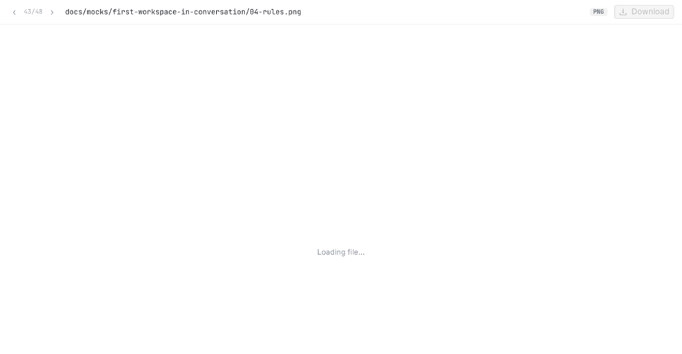
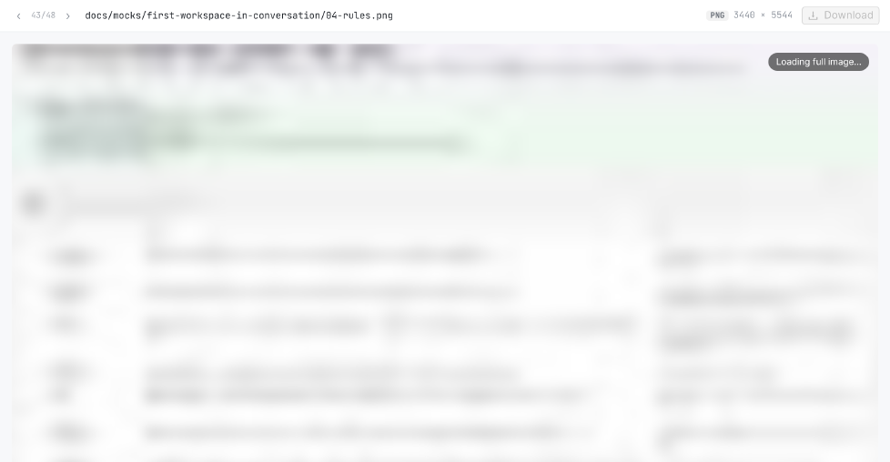
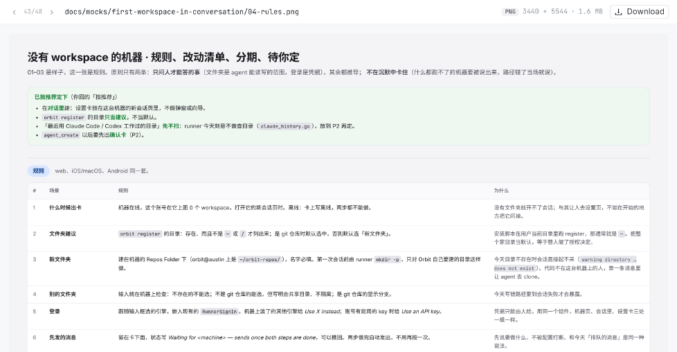

12
123
12| 规则 | |
|---|---|
| 哪些图有模糊版 | 改动（A / M）的 png、jpg / jpeg、gif：runner 用 Go 标准库就能解码的格式。webp、avif、bmp、ico 和删除的文件没有，照旧 Loading file…。 |
| 什么时候做 | runner 报告 diff 的时候（turn 结束、会话结束、diff 刷新）。turn 进行中刚画的图，要等这一轮结束才有模糊版。 |
| 多大 | 96 px 宽（最长边不超过 256 px）的 JPEG，约 1.5–4 KB 一张；你这几张板子平均 2.6 KB。 |
| runner 的开销 | 第一次要解码原图，最大那张板子约 0.2 秒。按文件（路径 + 大小 + 修改时间）缓存，没变的图不再解码。每次报告最多花 1.5 秒、最多带 128 KB 模糊图，超出的那几张照旧。 |
| 翻页预取（附带） | 看一张图时，‹ › 前后两张图在后台先读好，翻过去直接是清晰的。只预取图片，不预取删除的文件。 |
| 服务端即时回复（附带） | runner 一交回文件就回给浏览器，不再每秒查一次。每张图省 0.2–1 秒。 |
| 旧 runner、原生客户端 | 没有新字段的 diff 照旧显示 Loading file…。iOS / macOS / Android 不受影响，以后可以跟进。 |
src/runner-go/worktree_image_preview.go新：解码、缩小、JPEG、缓存、时间和字节预算，加 go 测试src/runner-go/worktree.go · types.godiff 报告里给图片带上 preview / width / heightsrc/shared/src/dto.ts · src/web/src/api.tsFilePatch 加三个可选字段src/web/src/components/WorktreeFilePreview.tsx · SessionOutputs.tsx · index.css模糊版、换成清晰的、翻页预取src/apiserver/src/sessions/sessions.service.ts · runner-api.controller.tsrunner 交回文件就回复（waitForInbox / notifyInbox）package.json版本号 +1：runner 发版，部署后约 10 分钟内自己更新测试runner go test、web vitest、apiserver spec